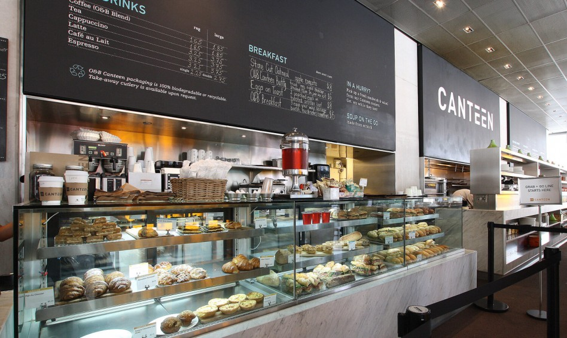
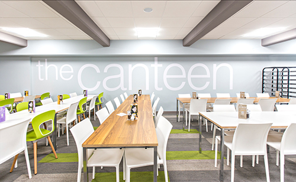

Mess
Rules for Mess/Dining:
- Hostel Messes are run in two groups. One group is run by private contractor and another is cooperative venture which is run on a "No Profit No Loss" basis.
- The residents are expected to maintain proper decorum in the Dinning Hall. Shouting and sitting on the mess table is strictly prohibited, if any one is found doing so he/she shall be fined Rs. 100 to Rs. 1000 depending on the severity of offence.
- The Mess Secretary from the hostel will normally be elected / nominated and he/ she and his /her team will look after the quality of the food provided and ensure hygiene in the mess.
- Food will not be served outside the dining hall for students. However, in case of illness, students may be served "SICK DIET" in their rooms with prior permission of the Warden.
- In no case mess utensils should be taken outside the dining hall.
- In no case, a resident can enter the kitchen either to collect food or to communicate any grievances regarding food with kitchen staff.
- Wastage of food is strictly prohibited, if any student found to leave the food in his/ her plate, shall be fined suitably.
- A resident who desires to entertain authorised guests in the Dining Hall shall purchase requisite number of coupons for the required meal against cash payment in advance.
- Sale of coupons will be limited to the availability of food and will be sold on first come first serve basis.
- Mess charges will be reviewed and fixed / changed every six months, preferably in January and August, in consultation with members of the Mess Committee and hostel Wardens.
Gallery



